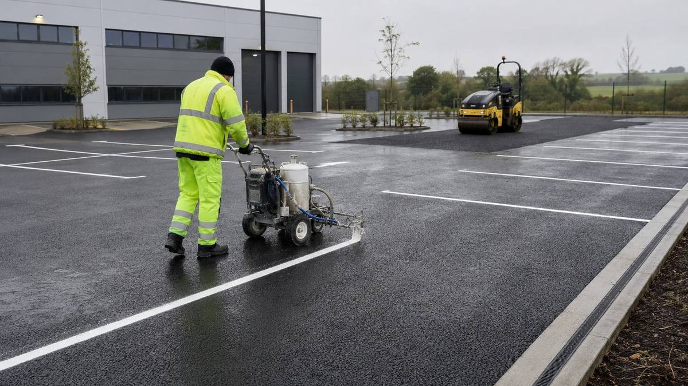

Home / Services
Tarmacadam & surfacing
Driveways, car parks, private roadways and yards across Limerick and Kerry - built from the base course up.
A surface is only as good as what is under it
Most failed driveways and car parks did not fail in the wearing course. They failed because the sub-base was never right, or because water had nowhere to go. Anyone can lay a black surface that looks correct for two summers.
Drainage is part of surfacing
Falls, edges, gullies and outfalls are not extras. Water that cannot leave a surface gets underneath it, and once it is under the base in an Irish winter, freeze-thaw does the rest.
Not everything needs a full dig-out
Where the base is genuinely sound, an overlay is far more economical. Where it has failed, laying new material over the problem simply buys you a year. Part of the job is telling you honestly which one you have.
How the job runs
In order, and in writing.
Assess the existing base
This determines everything else, so it happens first.
Excavate and prepare
Dig out to the depth the job actually needs, not the depth that is quickest.
Set falls and edges
Drainage falls, kerbing and edge restraint before any surfacing.
Base and binder
Laid and compacted in the correct sequence.
Wearing course
Rolled to finish, then left to cure before traffic.
Mark out if required
Line marking follows on directly where a car park needs it.
Before you get quotes
What determines the price.
We do not publish figures, because a figure without a site visit is a guess. These are the variables that actually move the number - worth understanding whoever you end up using.
Condition of the existing base
Overlay versus full excavation is the single biggest cost difference in the job.
Area and depth
Depth is dictated by use - a domestic driveway and a yard taking HGVs are not the same construction.
Drainage works
Whether gullies, channels or falls need to be created or corrected.
Edging and kerbing
Unrestrained edges fail first, so this is rarely worth cutting.
Access for plant
Whether machinery can reach the area, and what has to be protected while it does.
Muckaway
Excavated material has to go somewhere, and on larger digs that is a real line item.
When you don't need us
If your driveway is structurally sound and just looks tired, you may need a clean rather than a new surface - power washing costs a fraction of resurfacing. And if only a small area has failed, a patch repair is often the honest answer. We will say so.
Questions
Straight answers.
How long does a driveway take?
Most domestic driveways are a few days depending on size, groundworks and weather. We confirm a realistic timeframe in the written quote rather than an optimistic one.
Can you resurface over what is there?
Often, yes - if the base is sound. If it has failed we will tell you, because an overlay over a failed base will not last.
How soon can we drive on it?
New tarmac needs time to cure and the timeframe varies with weather and depth. We give you specific guidance on the day.
Do you do the line marking too?
Yes. Surfacing and marking are frequently done together so the car park comes back into use fully finished.
Do you work in Kerry?
Yes, across Limerick and Kerry.
Where we work
Limerick and Kerry.
Based at the Old Creamery Enterprise Centre in Ardagh, Co. Limerick, working across the county and into Kerry.
Limerick City · Ardagh · Adare · Newcastle West · Rathkeale · Askeaton · Croom · Kilmallock · Abbeyfeale · Foynes · Patrickswell · Castleconnell · Caherconlish · Bruff · Dromcollogher · Pallaskenry · Glin · Shanagolden · Athea · Annacotty · Murroe · Cappamore · Tralee · Killarney · Listowel · Castleisland · Abbeydorney · Tarbert
Tell us what needs doing.
Free site visit, free assessment, itemised quote. No obligation either way.
Something urgent? Call - 24/7 emergency call-outs.